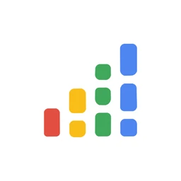

01
Le rapport du jour sur ton téléphone
Chaque jour de bourse, une fiche par action de ta liste arrive sur Telegram ou par e-mail : note sur 100, tendance, risques, actualités et points à surveiller.
Ta liste→Analyse IA→Telegram

Tu lui donnes ta liste d'actions : chaque jour, l'IA lit les cours et l'actu, et t'envoie une fiche par action sur ton téléphone. Une aide pour réfléchir, pas un conseil.

Daily Stock Analysis (DSA) est un outil qui analyse chaque jour ta liste d'actions avec une IA. Il récupère les cours, les indicateurs techniques et l'actualité de chaque titre, puis le modèle d'IA de ton choix (Gemini, Claude, DeepSeek, Qwen, un service compatible OpenAI, ou un modèle local avec Ollama) rédige un tableau de bord : pour chaque action, une conclusion, une note sur 100, la tendance, des niveaux d'entrée et de sortie, les risques et les catalyseurs. Le rapport arrive sur Telegram, Discord, Slack, par e-mail, sur WeChat Work ou Feishu. Une interface web ajoute l'historique, l'analyse à la demande, un agent de stratégies, le backtest et le suivi de portefeuille. La différence avec Ghostfolio (vidéo n°36) : Ghostfolio suit ton patrimoine ; DSA analyse tes actions chaque jour. Ce n'est pas un conseil d'investissement : c'est une aide pour réfléchir, c'est toi qui décides.
Tu forkes le dépôt, tu ajoutes dans Settings > Secrets and variables > Actions au moins une clé d'IA, un canal de notification (ex. TELEGRAM_BOT_TOKEN et TELEGRAM_CHAT_ID) et ta liste STOCK_LIST, puis tu actives les workflows. Par défaut, l'analyse part du lundi au vendredi à 10 h UTC (18 h à Pékin, 11 h à Paris en hiver) ; l'horaire se change dans le fichier du workflow.
Recommandégit clone du dépôt, cp .env.example .env (clés et liste d'actions), puis docker compose -f docker/docker-compose.yml up -d server pour l'interface web sur le port 8000 (ou analyzer pour l'analyse planifiée seule). Une image officielle zhulinsen/daily_stock_analysis existe aussi. Compte 1 Go de RAM pour une analyse complète.
Chez toipip install -r requirements.txt, puis python main.py (options --webui, --schedule, --dry-run…). Python 3.10 ou plus. Avec Docker, c'est le mode conseillé pour une IA locale avec Ollama (sur GitHub Actions, le README recommande une IA en ligne).
Un peu techniqueChaque jour de bourse, une fiche par action de ta liste arrive sur Telegram ou par e-mail : note sur 100, tendance, risques, actualités et points à surveiller.
Un résumé des grands indices, du nombre de hausses et de baisses, et des secteurs les plus forts et les plus faibles de la séance.
Pose tes questions en langage courant à l'agent, qui connaît 15 stratégies intégrées (moyennes mobiles, ondes d'Elliott, tendance, événements, croissance…).
Une capture d'écran de ton appli de courtier, un fichier CSV ou Excel, ou un copier-coller : l'outil reconnaît les codes et les noms des actions.
Dans l'interface web, relis les anciens rapports, vérifie après coup si les analyses passées tenaient la route (backtest) et suis ton portefeuille.
Créé le 10 janvier 2026 par le développeur ZhuLinsen, Daily Stock Analysis a dépassé 69 000 étoiles et 56 000 copies (forks) sur GitHub en dix mois : beaucoup de forks servent à le faire tourner sur son propre compte avec GitHub Actions. Il a été n°2 de GitHub Trending (juin 2026), n°1 des dépôts Python du jour sur Trendshift, mis en avant par HelloGitHub, et fait l'objet d'une publication sur arXiv (« DSA: Evidence-Aware LLM-Agent Orchestration for Multi-Market Stock Research »).
Une nouvelle version presque chaque semaine (3.27 à 3.30 entre juillet et août 2026, 3.32 ensuite), plus de 1 000 commits et des correctifs réguliers.
Environ 69 500 étoiles et 56 600 forks en dix mois, des guides écrits par d'autres (NAS, Railway, Japon), et une image Docker très téléchargée.
Aucun compte de courtier demandé et tout peut tourner chez toi ; mais ta liste et les données partent chez le fournisseur d'IA (sauf Ollama), et les journaux d'un fork public sont visibles.
Licence MIT, gratuit ; porté surtout par un seul auteur, financé par des sponsors (dont des fournisseurs d'IA avec liens d'affiliation).
Moins d'un an d'existence, changements très fréquents, sources de données gratuites instables ; la documentation et le code sont d'abord en chinois.
Comment on note : 5 critères notés sur 5, vérifiés sur GitHub, le README et la documentation du dépôt, Trendshift, HelloGitHub et arXiv le 16 novembre 2026. La note sur 10 est la moyenne ramenée sur 10.
Bon pour : Recevoir chaque jour une analyse IA de tes actions US ou asiatiques, sans abonnement
Bon pour : Des analyses écrites par des analystes, des portefeuilles modèles et les actions européennes
Bon pour : Des données financières complètes et un assistant IA, sans rien installer
Bon pour : Les actions américaines, avec des notes « Quant » et des articles d'analystes (en anglais)
Bon pour : Suivre ton patrimoine et tes placements, plutôt qu'analyser chaque action
Aucun de ces outils ne remplace ton jugement : une analyse, humaine ou IA, peut se tromper. Ce n'est pas un conseil d'investissement.
Code source, installation et documentation officielle : tout est là.

Chaque vidéo RepoPop t'explique un dépôt GitHub utile en moins d'une minute, avec son kit comme celui-ci.